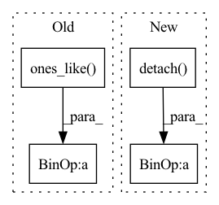

Pattern ID :2827

Before Change
// [n, k]
summedProb = batchWiseLogit.mean(1).sigmoid()
target = torch.ones_like(summedProb) / 2.0
// [n, ]
reg = F.binary_cross_entropy(summedProb, target, reduction="none").sum(-1)
After Change
for latent, q in zip(latents, quantizeds):
l2QLoss.append(F.mse_loss(latent.detach(), q, reduction="none").mean(axis=(1, 2, 3)))
l1QLoss.append(F.l1_loss(latent.detach(), q, reduction="none").mean(axis=(1, 2, 3)))
l2QLoss.append(0.1 * F.mse_loss(latent, q.detach(), reduction="none").mean(axis=(1, 2, 3)))
l1QLoss.append(0.1 * F.l1_loss(latent, q.detach(), reduction="none").mean(axis=(1, 2, 3)))
l1QLoss = sum(l1QLoss)
In pattern: SUPERPATTERN
Frequency: 3
Non-data size: 4
Instances
Fragment ID: 15647887
Project Name: xiaosu-zhu/mcquic
Commit Name: a70c627dfb797c38494d697f152f70f80bea53e3
Time: 2021-03-21
Author: xiaosu.zhu@outlook.com
File Name: src/mcqc/losses/structural.py
M Class Name: CompressionLossTwoStage
N Class Name: CompressionLossTwoStage
M Method Name: forward(8)
N Method Name: forward(8)
M Parent Class: nn.Module
N Parent Class: nn.Module
M File Name: src/mcqc/losses/structural.py
N File Name: src/mcqc/losses/structural.py
M Start Line: 49
M End Line: 86
N Start Line: 49
N End Line: 93
'>
Before Change
).detach()
a.scatter_(dim=1, index=label.unsqueeze(1), src=src)
sigma = torch.ones_like(inp, device=inp.device, dtype=inp.dtype) * self.m
src = torch.ones_like(label.unsqueeze(1), dtype=inp.dtype, device=inp.device) - self.m
sigma.scatter_(dim=1, index=label.unsqueeze(1), src=src)
After Change
self.soft_plus = nn.Softplus()
def forward(self, sp: Tensor, sn: Tensor) -> Tensor:
ap = torch.clamp_min(- sp.detach() + 1 + self.m, min=0.)
an = torch.clamp_min(sn.detach() + self.m, min=0.)
delta_p = 1 - self.m
delta_n = self.m
logit_p = - ap * (sp - delta_p) * self.gamma
logit_n = an * (sn - delta_n) * self.gamma
loss = self.soft_plus(torch.logsumexp(logit_n, dim=0) + torch.logsumexp(logit_p, dim=0))
return loss
'>
Fragment ID: 15647864
Project Name: tinyzeamays/circleloss
Commit Name: 61758eefe091cf44f4de87aadd84fcb2bc377f94
Time: 2020-04-04
Author: 1049793129@qq.com
File Name: circle_loss.py
M Class Name: CircleLossLikeCE
N Class Name: CircleLoss
M Method Name: forward(3)
N Method Name: forward(3)
M Parent Class: nn.Module
N Parent Class: nn.Module
M File Name: circle_loss.py
N File Name: circle_loss.py
M Start Line: 24
M End Line: 35
N Start Line: 28
N End Line: 39
'>
Before Change
).detach()
a.scatter_(dim=1, index=label.unsqueeze(1), src=src)
sigma = torch.ones_like(inp, device=inp.device, dtype=inp.dtype) * self.m
src = torch.ones_like(label.unsqueeze(1), dtype=inp.dtype, device=inp.device) - self.m
sigma.scatter_(dim=1, index=label.unsqueeze(1), src=src)
After Change
self.gamma = gamma
def forward(self, sp: Tensor, sn: Tensor) -> Tensor:
ap = torch.clamp_min(- sp.detach() + 1 + self.m, min=0.)
an = torch.clamp_min(sn.detach() + self.m, min=0.)
sigma_p = 1 - self.m
sigma_n = self.m
logit_p = ap * (sp - sigma_p) * self.gamma
logit_n = an * (sn - sigma_n) * self.gamma
loss = torch.log(1 + torch.clamp_max(torch.exp(logit_n).sum() * torch.exp(- logit_p).sum(), max=1e38))
z = - torch.exp(- loss) + 1
sp.backward(gradient=z * ap * torch.softmax(logit_p, dim=0))
'>
Fragment ID: 15647878
Project Name: tinyzeamays/circleloss
Commit Name: 9c909ec6274b1c9c139a62f9f84ecf91c5edee35
Time: 2020-04-03
Author: 1049793129@qq.com
File Name: circle_loss.py
M Class Name: CircleLoss
N Class Name: CircleLossBackward
M Method Name: forward(3)
N Method Name: forward(3)
M Parent Class: nn.Module
N Parent Class: nn.Module
M File Name: circle_loss.py
N File Name: circle_loss.py
M Start Line: 23
M End Line: 34
N Start Line: 43
N End Line: 58